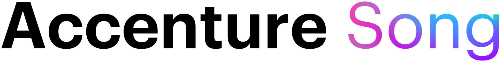
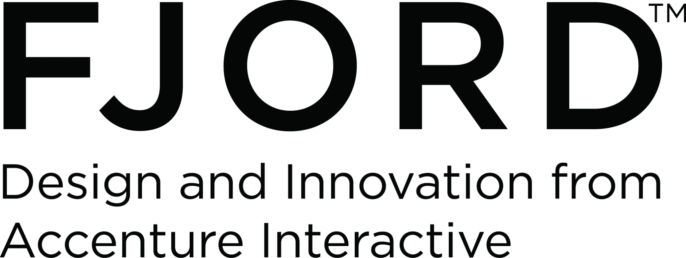
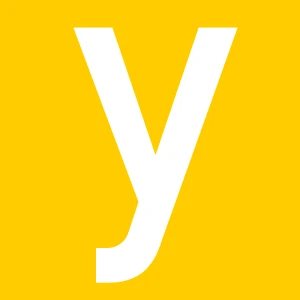
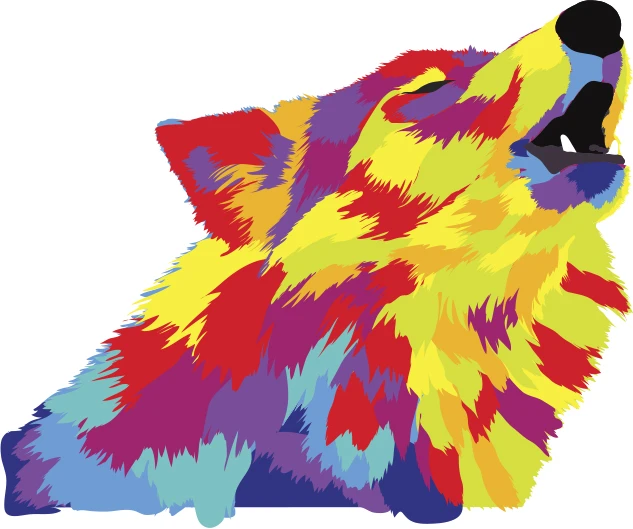

Full-Stack Design Director, studio partner. Based in Berlin, Germany
Working in consulting has allowed me to collaborate across industries, navigating different levels and areas of activity. Whether in B2B, B2C, or B2B2C environments, success comes from understanding multiple perspectives at once—ensuring solutions that engage all stakeholders effectively.
In recent years, I’ve been increasingly focused on Experience—what shapes it and drives it forward. Every industry has its own unique needs, and there’s no universal design formula that works everywhere. Instead, a strong design philosophy is key—one that gives purpose to methods and tools, guiding products and services through meaningful evolution.
Today, I lead design projects worldwide, managing teams of up to 10 designers across different levels and disciplines. Through workshops, user interviews, and Design Thinking activities, I help create new products, refine existing ones, and uncover hidden opportunities to enhance experiences and streamline processes.
Expertise
Education
M.A. Integrated Design
Koln International School of Design
B.A Architecture and Urbanism
University of Sao Paulo
Design MBA
D.MBA
Validating Strategies
Koln International School of Design
Relevant experience
nnamu (2024 - 2024)
Fullstack Design Director
- Design direction (UX/UI, Service, Branding, Communications)
- Team management
As Design Director at Nnamu, I was responsible for shaping the usability and visual quality of its digital products while fostering a user-centric design culture within the company. The fast-paced startup environment required balancing speed with quality, and despite the collaboration being shorter than initially planned, we made significant strides. Our work led to a new design system and a full revamp of Nnamu’s flagship product, Nnamu Negotiations, delivering major improvements in both experience and functionality.

Accenture Song (2020 - 2024)
Fullstack Design Lead/Manager
- Design leadership (UX/UI, Service, Spatial, Business)
- Team management
- Stakeholder management
As a Design Manager at Accenture Song, I worked with stakeholders to shape design strategies and led teams in bringing them to life. From research to execution, I guided the processes—running workshops, mapping user needs, and helping the team craft thoughtful, user-centered solutions.

Fjord (2017 - 2020)
Fullstack Design Lead/Manager
- Design leadership (UX/UI, Service, Spatial, Business)
- Team management
- Stakeholder management
As a Design Manager at Fjord, I worked with stakeholders to shape design strategies and led teams in bringing them to life. From research to execution, I guided the processes—running workshops, mapping user needs, and helping the team craft thoughtful, user-centered solutions.

yellow Design (2015 - 2016)
Senior Graphic Designer
- Design leadership and execution (Branding, Exhibition, UX/UI)
At Yellow Design, I led UI, Exhibition, and Corporate Identity projects while shaping the studio’s communication execution. Attention to detail and freedom to explore were key, with highlights to Yellow Design’s exhibit at the Design Center in Stuttgart and a new interface system for Bruker Optics.
Uniplan (2013 - 2014)
Graphic Designer
- Graphic design leadership and execution (Branding, Editorial, Communication, Exhibition)
At Uniplan, I designed immersive brand experiences for companies like BMW, Fraunhofer Institute, and Schneider Electric. From research to concept development, I crafted exhibits that blended spatial, visual, and sensorial design to fully engage visitors.

Estudio Guara (2006 - 2012)
Partner/Lead Designer
- Graphic design leadership and execution (Branding, Editorial, Communication, Exhibition)
I co-founded Estudio Guará, diving into classic graphic design to collaborate with small and big businesses and institutions. There I sharpened my eye for visual quality and strengthened my ability to collaborate with stakeholders.
Extra bit
Career in numbers
20+
Years of experience
100+
Clients
200+
projects